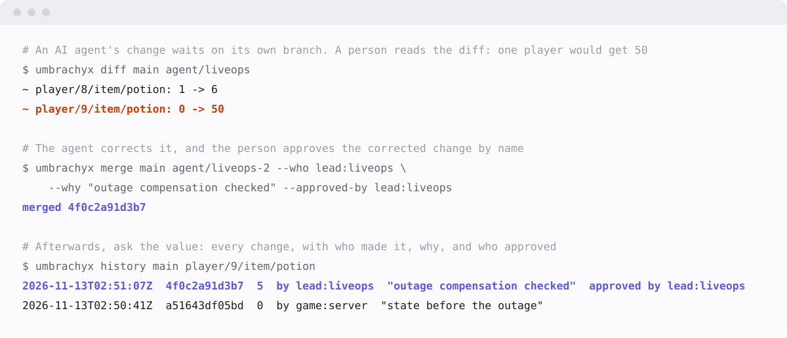

An AI agent changed your data.
Nobody looked at what it wrote.
An agent's writes go to a branch of its own first.
Production does not change until a person approves the diff.

WHY IT HAPPENS
A database holds only the current value, and a write is production the moment it lands. Let an agent write → it is fast, there are many of it, and it is sometimes wrong → by the time someone notices, the old value and the reason are gone.
Narrowing an agent's permissions by configuration fails with one wrong setting. Here an agent has no way to write to production to begin with. The token an agent is given names its branch; it cannot write anywhere else, and it cannot approve. What a hijacked agent was tested not to be able to do is listed with the tests.
WHAT IT IS
Umbrachyx is an in-memory database that keeps every change as history. Each value knows when it changed, from what to what, who changed it, why, and who approved the change; and the history can be branched, diffed, merged and undone, the way git handles files. It speaks the Redis protocol, so existing clients work, and agents connect through MCP.
- A write is acknowledged only once it is synced to the log. The tree and the history are rebuilt from the log.
- Reads never wait for writes. While writes keep coming, a read answers in tens of microseconds.
- Deleting means destroying a key. Values are encrypted under a key per subject (a player, say). Destroy the key and the values can never be read again, while the shape of the history stays.
HOW A CHANGE REACHES PRODUCTION
-
1. Hand over
A person gives the agent a token for one branch, some keys, a purpose and an expiry.
-
2. Write
The agent writes to its branch, with a reason. Production does not change.
-
3. Look
A person picks one from the list of changes waiting and reads its diff.
-
4. Decide
Approved, it enters production with the approver's name. Rejected, it is kept with the reason.
- What is approved is the diff the person saw. If the agent wrote more after that, the approval is refused. Nothing is merged unseen.
- If production moved first, it stops. When both sides changed the same key, nothing is written and the key is named. A conflict is never settled by guessing.
- A token that can approve cannot write, and one that can write cannot approve.
- The list, the diff and the approval can be a screen in a database viewer (dbboard has a tab for it) or commands in a terminal.
QUESTIONS IT CAN ANSWER
- "An item disappeared." When, and in which change?
- "This account has more than it should." Where did it come from, and who approved it?
- "We gave everyone the wrong reward." Take back that one change and keep what came after.
- "Try the new event on real data." On a branch, without touching production.
- "Delete my data." Make that person's values unreadable for good.
Four walkthroughs, each run by the tests as written: a game's inventory, a support desk, settings rolled out in stages and five questions about a game's data.
SPEED, WITH THE ROWS WHERE IT LOSES
Measured next to Valkey on the same AWS machine (EC2 m6id.xlarge, Tokyo,
its local NVMe disk). On both sides a write is synced to disk before it is
acknowledged (Valkey with appendfsync always). 32-byte values, a million
keys, synthetic data.
| A second | Umbrachyx | Valkey | |
|---|---|---|---|
| Reads while 50 clients keep writing | 23,941 | 1,878 | about 12.7× more |
| Reads, one client | 54,466 | 35,186 | about 1.5× more |
| Synced writes, one client | 8,813 | 6,737 | about 1.3× more |
| Reads, 50 clients | 156,740 | 161,290 | about the same |
| Synced writes, 64 clients | 35,689 | 95,329 | about 2.7× fewer |
| Synced writes, 256 clients | 38,292 | 117,855 | about 3.1× fewer |
| Synced writes, 50 clients sending 64 at a time | 72,908 | 611,434 | about 8× fewer |
| Memory for each overwrite | about 620 bytes | about 16 bytes | about 37× more |
The speed rows are one run each, on 2026-11-13; the memory row is from three runs on 2026-11-12. It is not a faster Valkey. With many clients writing at once, and in memory, it is clearly behind: that is what keeping all of the history costs. The raw output, the machine and the steps are in bench/results, and every table, with PostgreSQL and Dolt, is in the README.
Robustness
- The server killed in the middle of writes: 1,100 times, with 2,202,833 writes acknowledged; none lost.
- Simulated disks and power cuts: three simulations of 10,000 seeds each (writes torn part way, failed syncs, flipped bits, a clock that goes back), more than 400,000 restarts in all; no acknowledged write went missing.
- All of these run in CI on Linux and Windows for every change.
START
The server alone, in Docker, with its log on a volume. An image is published with the first released version; until then, build it from a checkout.
$ git clone https://github.com/meta-taro/umbrachyx && cd umbrachyx
$ docker build -t umbrachyx .
$ docker run -d --name umbrachyx -p 127.0.0.1:6380:6380 -v umbrachyx-data:/data umbrachyx
$ valkey-cli -p 6380 set player/42/gems 100
OK
$ valkey-cli -p 6380 umbra.history app player/42/gems
# the value, the commit's id, when, who, why and who approved, as JSON
-
Publish the port to
127.0.0.1only, as above. Reads need no token yet, and nothing on the connection is encrypted. - To try branches, diffs and approval from the command line, see the five-minute quick start.
- To give an agent a token and connect it, see docs/agents.md.
WHAT IT CANNOT DO YET
- It runs on one machine. Replication (read-only followers) is being built; machines cannot be connected yet.
- Everything is held in memory. History grows with every write, and nothing moves old history to disk or limits how long it is kept. Out of memory, the server stops and says why; what it acknowledged is kept.
- It is not ready to be used over a network. Reads need no token and there is no TLS. Use it on one machine, or inside a network you trust.
- There is no backup tool. For now, stop the server and copy the log and the key file together.
- Keys and values only. No range reads, secondary indexes, aggregates or SQL.
- Many clients writing at once get a fraction of what Valkey gives them, as the table shows.
- Power cuts have only been simulated. Cutting the power of real hardware, and runs that last for days, are still to come.
- Approvals that need two people, and rules checked at approval (types, ranges), do not exist yet.